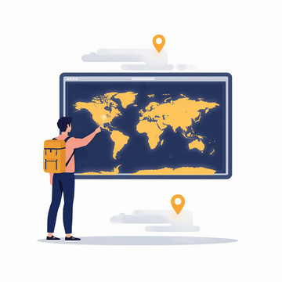

2. Research
83 travellers told us: culture first, and a real person still matters.
Source: the tourism survey form, August 2026, in English, Telugu, and Roman Telugu. Percentages below are merged across all three language versions, out of 83 responses. This is a small, student heavy sample, mostly around Visakhapatnam, Hyderabad, and nearby cities. It proves a wedge, not all of India. Do not present it as national proof.
want culture, not just sightseeing. 72 of 83 said they are interested in exploring the culture of places they visit.
would pay for a language matched guide. 72 of 83 said yes, or depends, mainly yes if they do not know the city.
say AI or a person depends on the trip. 43 of 83 chose depends. 40% chose in person as always best. Only 8% said AI alone is enough.
guide demand is adventure, then heritage. Adventure touring 52%, heritage places 43%, cities 5%.

Guide demand, as bars
Adventure touring 52%
Heritage places 43%
Cities 5%
How people plan today
54% plan the trip themselves with no external help. 39% prefer unplanned adventure. For tools, Google was the most common answer, followed by ChatGPT, then travel agencies. No single tool gives a plan plus a trusted local during the trip. That gap is Virun.
What people will pay for a guide, 4 to 6 days, food and transport excluded
Online guide: Rs 200 to 400: 27%. Rs 400 to 600: 36%. Rs 600 to 800: 22%. Rs 800 to 1000: 16%.
63% are in the Rs 200 to 600 range for online help. 84% are at or below Rs 800.
Offline, in person guide: Rs 1000 to 1500: 33%. Rs 1500 to 2000: 28%. Rs 2000 to 2500: 28%. Rs 2500 to 3000: 12%.
88% are in the Rs 1000 to 2500 range for an in person guide.
The hard truth about guide supply
Interest is broad, firm commitment is small. Asked if they would be a paid guide, 23% said yes and 33% said they do not mind, so 55% are open. But in the follow up question, answered by only 39 people, only 6 said yes firmly to working as a guide on the platform, while 33 said no, they just wanted to explore.
This is why the Yatra pilot matters more than the app. Supply will not appear because a website exists. It will appear because a trusted brand recruits, verifies, and publicises it. Do not hide this number from Yatra. It is the reason to partner.
See the survey form
Google Forms link for the survey, to be added here when you paste it.
Google Forms survey link, coming from youThis button is a placeholder, not a real form link. Paste the link and it will be swapped in, in one edit.